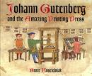

"You
may perceive, Madam," said Dr. Johnson with a pugilistic smile, "that I am
well-bred to a degree of needless scrupulosity." Whatever the degree of conformity
the Doctor had achieved with the new stress of his time on white-shirted tidiness, he was
quite aware of the growing social demand for visual presentability.
Printing
from movable types was the first mechanization of a complex handicraft, and became the
archetype of all subsequent mechanization. From Rabelais and More to Mill and Morris, the
typographic explosion extended the minds and voices of men to reconstitute the human
dialogue on a world scale that has bridged the ages. For if seen merely as a store of
information, or as a new means of speedy retrieval of knowledge, typography ended parochialism and tribalism,
psychically and socially, both in space and in time. Indeed the first two centuries
of printing from movable types were motivated much more by the desire to see ancient and
medieval books than by the need to read and write new ones. Until 1700 much more than 50
per cent of all printed books were ancient or medieval. Not only antiquity but also the
Middle Ages were given to the first reading public of the printed word. And the medieval
texts were by far the most popular.

The Gutenberg Printing Press, circa 1440
Like any
other extension of man, typography had psychic and social consequences that suddenly
shifted previous boundaries and patterns of culture. In bringing the ancient and medieval
worlds into fusion—or, as some would say, confusion—the printed book created a
third world, the modern world, which now encounters a new electric technology or a new
extension of man. Electric means of moving of information are altering our typographic
culture as sharply as print modified medieval manuscript and scholastic culture.
Beatrice
Warde has recently described in Alphabet an electric display of letters painted by
light. It was a Norman McLaren movie advertisement of which she asks:
Do you wonder that I was late for the theatre
that night, when I tell you that I saw two club-footed Egyptian A's … walking off
arm-in-arm with the unmistakable swagger of a music-hall comedy-team? I saw base-serifs
pulled together as if by ballet shoes, so that the letters tripped off literally sur
les pointes …after forty centuries of the necessarily static
Alphabet, I saw what its members could do in the fourth dimension of Time,
"flux," movement. You may well say that I was electrified.
Nothing
could be farther from typographic culture with its "place for everything and
everything in its place."
Mrs. Warde
has spent her life in the study of typography and she shows sure tact in her startled
response to letters that are not printed by types but painted by light. It may be that the
explosion that began with phonetic letters (the "dragon's teeth" sowed by King
Cadmus) will reverse into "implosion" under the impulse of the instant speed of
electricity. The alphabet (and its extension into typography) made possible the spread of
the power that is knowledge, and shattered the bonds of tribal man, thus exploding him
into agglomeration of individuals. Electric
writing and speed pour upon him, instantaneously and continuously, the concerns of all
other men. He becomes tribal once more. The human family becomes one tribe again.
The micro and macro effects of the printed book.
The
new extension becomes environment, invisible to man.
'That wisdom and knowledge should be distilled from the press seemed an
obvious metaphor to anybody in the sixteenth century.' (GG, p.187)
Any student
of the social history of the printed book is likely to be puzzled by the lack of
understanding of the psychic and social
effects of printing. In five centuries explicit comment and awareness of the
effects of print on human sensibility are very scarce. But the same observation can be
made about all the extensions of man, whether it be clothing or the computer. An extension
appears to be an amplification of an organ, a sense or a function, that inspires the
central nervous system to a self-protective gesture of numbing of the extended area, at
least so far as direct inspection and awareness are concerned. Indirect comment on the
effects of the printed book is available in abundance in the work of Rabelais, Cervantes,
Montaigne, Swift, Pope, and Joyce. They used typography to create new art forms.
Point of view occurs at both the micro and macro level of book culture: psychically
from a fixed visual perspective, and socially from the sense of privacy, and independence
from tribe and family, afforded by print media.
Psychically
the printed book, an extension of the visual faculty, intensified perspective and the
fixed point of view. Associated with the visual stress on point of view and the vanishing point that
provides the illusion of perspective there comes another illusion that space is visual,
uniform and continuous. The linearity precision and uniformity of the arrangement of
movable types are inseparable from these great cultural forms and innovations of
Renaissance experience. The new intensity of visual stress and private point of view in
the first century of printing were united to the means of self-expression made possible by
the typographic extension of man.
The artist and the empire builder share a common worldview and purpose: to create and
express themselves in their creations. As much as any artist, an industrial chief strives
to put his personal stamp on his corporation.
Socially,
the typographic extension of man brought in nationalism, industrialism, mass markets, and
universal literacy and education. For print presented an image of repeatable precision
that inspired totally new forms of extending social energies. Print released great psychic
and social energies in the Renaissance, as today in Japan or Russia, by breaking the
individual out of the traditional group while providing a model of how to add individual
to individual in massive agglomeration of power. The same spirit of private enterprise
that emboldened authors and artists to cultivate self-expression led other men to create
giant corporations, both military and commercial.
Perhaps the
most significant of the gifts of typography to man is that of detachment and
noninvolvement—the power to act without reacting. Science since the Renaissance has
exalted this gift which has become an embarrassment in the electric age, in which all
people are involved in all others at all times. The very word "disinterested,"
expressing the loftiest detachment and ethical integrity of typographic man, has in the
past decade been increasingly used to mean: "He couldn't care less." The same
integrity indicated by the term "disinterested" as a mark of the scientific and
scholarly temper of a literate and enlightened society is now increasingly repudiated as
"specialization" and fragmentation
of knowledge and sensibility. The fragmenting and analytic power of the printed
word in our psychic lives gave us that "dissociation
of sensibility" which in the arts and literature since Cezanne and since
Baudelaire has been a top priority for elimination in every program of reform in taste and
knowledge. In the "implosion" of the electric age the separation of thought and feeling has come
to seem as strange as the departmentalization of knowledge in schools and universities.
Yet it was precisely the power to separate thought and feeling, to be able to act without
reacting, that split literate man out of the tribal world of close family bonds in private
and and social life.
Unlike Islamic theology, which remained strictly
faith-based, Medieval Scholasticism was a philosophy and theology of Christendom based on
the idea that reason could deepen the understanding of belief and provide a rational
context for faith.
Scriptorium: literally "a place for writing."
"Patristic humanism subordinated dialectics [methodology] to grammar and rhetoric
[encyclopedic learning] until this same quarrel broke out afresh in the twelfth century
when Peter Abelard set up dialectics as the supreme method in theological
discussion.… After four centuries of triumphant dialectics, the traditional patristic
reaction, heralded by Petrarch, had gathered sufficient head under Erasmus to supplant a
scholasticism weakened from within by bitter disputes."
—An Ancient Quarrel in Modern America, Marshall McLuhan
Typography
was no more an addition to the scribal art than the motorcar was an addition to the horse.
Printing had its "horseless carriage" phase of being misconceived and misapplied
during its first decades, when it was not uncommon for the purchaser of a printed book to
take it to a scribe to have it copied and illustrated. Even in the early eighteenth
century a "textbook" was
still defined as a "Classick Author written very wide by the Students, to give room
for an Interpretation dictated by the Master, &c., to be inserted in the
Interlines" (O.E.D.). Before printing, much of the time in school and college
classrooms was spent in making such texts. The classroom tended to be a scriptorium with
a commentary. The student was an editor-publisher. By the same token the book market was a
secondhand market of relatively scarce items. Printing changed learning and marketing
processes alike. The book was the first teaching machine and also the first mass-produced
commodity. In amplifying and extending the written word, typography revealed and greatly
extended the structure of writing. Today, with the cinema and the electric speed-up of
information movement, the formal structure of the printed word, as of mechanism in
general, stands forth like a branch washed up on the beach. A new medium is never an
addition to an old one, nor does it leave the old one in peace. It never ceases to oppress
the older media until it finds new shapes and positions for them. Manuscript culture had
sustained an oral procedure in education that was called "scholasticism" at its higher levels;
but by putting the same text in front of any given number of students or readers print
ended the scholastic regime of oral disputation very quickly. Print provided a vast new memory for past writings
that made a personal memory inadequate.
Literacy, i.e. 'uniform educatonal processing,' homogenizes a group. A homogeneous
society expands its size and its power by simple addition, e.g. the three great
confederations of modern times: the British Empire, the United States, and the former
Soviet Union.
Margaret
Mead has reported that when she brought several copies of the same book to a Pacific
island there was great excitement. The natives had seen books, but only one copy of each,
which they had assumed to be unique. Their astonishment at the identical character of
several books was a natural response to what is after all the most magical and potent
aspect of print and mass production. It involves a principle of extension by homogenization that is the
key to understanding Western power. The open society is open by virtue of a uniform
typographic educational processing that permits indefinite expansion of any group by
additive means. The printed book based on typographic uniformity and repeatability in the
visual order was the first teaching machine, just as typography was the first
mechanization of a handicraft. Yet in spite of the extreme fragmentation or specialization
of human action necessary to achieve the printed word, the printed book represents a rich
composite of previous cultural inventions. The total effort embodied in the illustrated
book in print offers a striking example of the variety of separate acts of invention that
are requisite to bring about a new technological result.
homogenization ––>
nationalism ––> amplification of power ––> aggression
The psychic
and social consequences of print included an extension of its fissile and uniform
character to the gradual homogenization of diverse regions with the resulting
amplification of power, energy, and aggression that we associate with new nationalisms.
Psychically, the visual extension and amplification of the individual by print had many
effects. Perhaps as striking as any other is the one mentioned by Mr. E. M. Forster, who,
when discussing some Renaissance types, suggested that "the printing press, then only
a century old, had been mistaken for an engine of immortality, and men had hastened to
commit to it deeds and passions for the benefit of future ages." People began to act
as though immortality were inherent in the magic repeatability and extensions of print.
Another
significant aspect of the uniformity and repeatability of the printed page was the
pressure it exerted toward "correct" spelling, syntax, and pronunciation. Even
more notable were the effects of print in separating poetry from song, and prose from
oratory, and popular from educated speech. In the matter of poetry it turned out that, as
poetry could be read without being heard, musical instruments could also be played without
accompanying any verses. Music veered from the spoken word, to converge again with Bartok
and Schoenberg.
King Lear is the monarch who
couldn't leave well enough alone and balkanized his kingdom by dividing it among his
squabbling daughters, regressing instantly to the chaos of the feudal world from which it
had lately emerged. Lear doles out his kingdom like a god, one so powerful he has risen
above the mundane responsibilities of kingship. Moreover, Lear is the worst of all
possible tyrants, for he considers the kingdom a possession in his gift, that it is his to
give away, like his private property or the chattels of his household; indeed, since he
owns everything, there is no clear distinction between the state and society, which means
its members are his slaves.
With
typography the process of separation (or explosion) of functions went on swiftly at all
levels and in all spheres; nowhere was this matter observed and commented on with more
bitterness than in the plays of Shakespeare. Especially in King Lear, Shakespeare
provided an image or model of the process of quantification and fragmentation as it
entered the world of politics and of family life. Lear at the very opening of the play
presents "our darker purpose" as a plan of delegation of powers and duties:
Only we shall retain
The name, and all th' addition to a King;
The sway, revenue, execution of the rest,
Beloved sons, be yours: which to confirm,
This coronet part between you.
This act of
fragmentation and delegation blasts Lear, his kingdom, and his family. Yet to divide and
rule was the dominant new idea of the organization of power in the Renaissance. "Our
darker purpose" refers to Machiavelli himself, who had developed an individualist and
quantitative idea of power that struck more fear in that time than Marx in ours. Print,
then, challenged the corporate patterns of medieval organization as much as electricity
now challenges our fragmented individualism.
uniformity-repeatability ––> quantitative time & space ––> desacralized world ––>
control of physical processes by segmentation-fragmentation
'Machiavelli's abstraction
of the entity of personal power from the social matrix was comparable to the much earlier
abstraction of wheel from animal form.' GG, p.26
The uniformity
and repeatability of print permeated the Renaissance with the idea of time and space as
continuous measurable quantities. The immediate effect of this idea was to desacralize the
world of nature and the world of power alike. The new technique of control of physical
processes by segmentation and fragmentation separated God and Nature as much as Man and
Nature, or man and man. Shock at this departure from traditional vision and inclusive
awareness was often directed toward the figure of Machiavelli, who had merely spelled out
the new quantitative and neutral or scientific ideas of force as applied to the
manipulation of kingdoms.
The aura of serene authority and infallibility
conferred by divine right of kings, according to which a monarch is subject to no earthly
authority, and derives his right to rule directly from God, i.e. the king is not subject
to the will of his subjects or of the aristocracy.
Shakespeare's
entire work is taken up with the themes of the new delimitations of power, both kingly and
private. No greater horror could be imagined in his time than the spectacle of Richard II,
the sacral king, undergoing the indignities of imprisonment and denudation of his sacred prerogatives. It is
in Troilus and Cressida, however, that the new cults of fissile, irresponsible
power, public and private, are paraded as a cynical charade of atomistic competition:
The psychological origins of monarchy are
similar to those of apostolic succession: it provided a measure of stability unknown to
the turbulent feudal era.
In The Prince, Machiavelli introduced the idea of realpolitik and power
politics that disturbed the delicate balance of kingship.
Take the instant way;
For honour travels in a strait so narrow
Where one but goes abreast: keep, then, the path;
For emulation hath a thousand sons
That one by one pursue: if you give way,
Or hedge aside from the direct forthright,
Like to an enter'd tide they all rush by
And leave you hindmost…
(III, iii)
The image of
society as segmented into a homogeneous mass of quantified appetites shadows Shakespeare's
vision in the later plays.
Of the many
unforeseen consequences of typography, the emergence of nationalism is, perhaps, the most
familiar. Political unification of populations by means of vernacular and language
groupings was unthinkable before printing turned each vernacular into an extensive mass
medium. The tribe, an extended form of a family of blood relatives, is exploded by print,
and is replaced by an association of men homogeneously trained to be individuals.
Nationalism itself came as an intense new visual image of group destiny and status, and
depended on a speed of information movement unknown before printing. Today nationalism as
an image still depends on the press but has all the electric media against it. In
business, as in politics, the effect of even jet-plane speeds is to render the older
national groupings of social organization quite unworkable. In the Renaissance it was the
speed of print and the ensuing market and commercial developments that made nationalism
(which is continuity and competition in homogeneous space) as natural as it was new. By
the same token, the heterogeneities and noncompetitive discontinuities of medieval guilds
and family organization had become a great nuisance as speed-up of information by print
called for more fragmentation and uniformity of function. The Benvenuto Cellinis, the
goldsmith-cum- painter-cum-sculptor-cum-writer-cum-condottiere, became obsolete.
Once a new
technology comes into a social milieu it cannot cease to permeate that milieu until every
institution is saturated. Typography has permeated every phase of the arts and sciences in
the past five hundred years. It would be easy to document the processes by which the
principles of continuity, uniformity, and repeatability have become the basis of calculus
and of marketing, as of industrial production, entertainment, and science. It will be
enough to point out that repeatability conferred on the printed book the strangely novel
character of a uniformly priced commodity opening the door to price systems. The printed
book had in addition the quality of portability and accessibility that had been lacking in
the manuscript.
Directly
associated with these expansive qualities was the revolution in expression. Under
manuscript conditions the role of being an author was a vague and uncertain one, like that
of a minstrel. Hence, self-expression was of little interest. Typography, however, created
a medium in which it was possible to speak out loud and bold to the world itself, just as
it was possible to circumnavigate the world of books previously locked up in a pluralistic
world of monastic cells. Boldness of type created boldness of expression.
In the preface to The Playboy of the Western World, Synge tells
how he learned the provincial dialect by listening to the conversations of his mother's
Anglo-Irish servant girls "from a chink in the floor." Had they known he was
listening, the servant girls would probably have spoken a more "correct"
English; thus, eavesdropping enabled him to hear their spontaneous cadences.
Uniformity
reached also into areas of speech and writing, leading to a single tone and attitude to
reader and subject spread throughout an entire composition. The "man of letters"
was born. Extended to the spoken word, this literate equitone enabled literate
people to maintain a single "high tone" in discourse that was quite devastating,
and enabled nineteenth-century prose writers to assume moral qualities that few would now
care to simulate. Permeation of the colloquial language with literate uniform qualities
has flattened out educated speech till it is a very reasonable acoustic facsimile of the
uniform and continuous visual effects of typography. From this technological effect
follows the further fact that the humor, slang, and dramatic vigor of American-English
speech are monopolies of the semi-literate.
These
typographical matters for many people are charged with controversial values. Yet in any
approach to understanding print it is necessary to stand aside from the form in question
if its typical pressure and life are to be observed. Those who panic now about the threat
of the newer media and about the revolution we are forging, vaster in scope than that of
Gutenberg, are obviously lacking in cool visual detachment and gratitude for that most
potent gift bestowed on Western man by literacy and typography: his power to act without
reaction or involvement. It is this kind of specialization by dissociation that has
created Western power and efficiency. Without this dissociation of action from feeling and
emotion people are hampered and hesitant. Print taught men to say, "Damn the
torpedoes. Full steam ahead!"